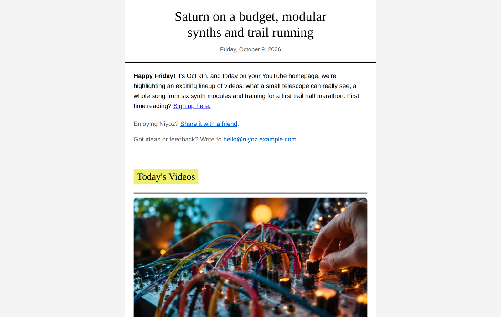
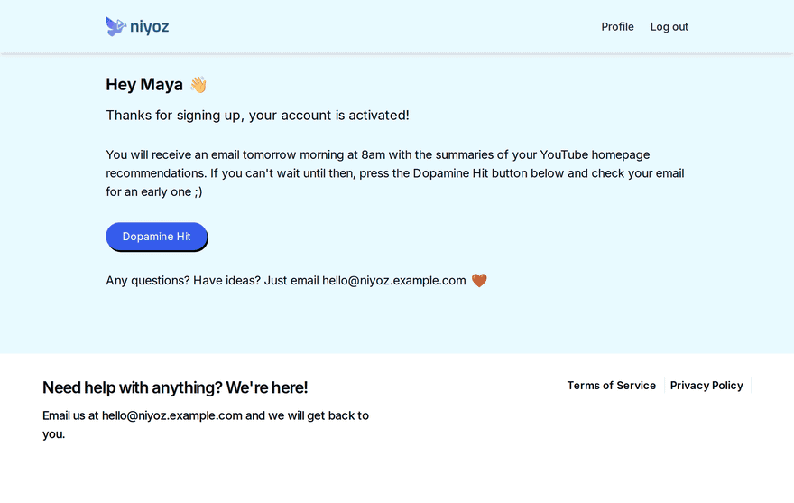
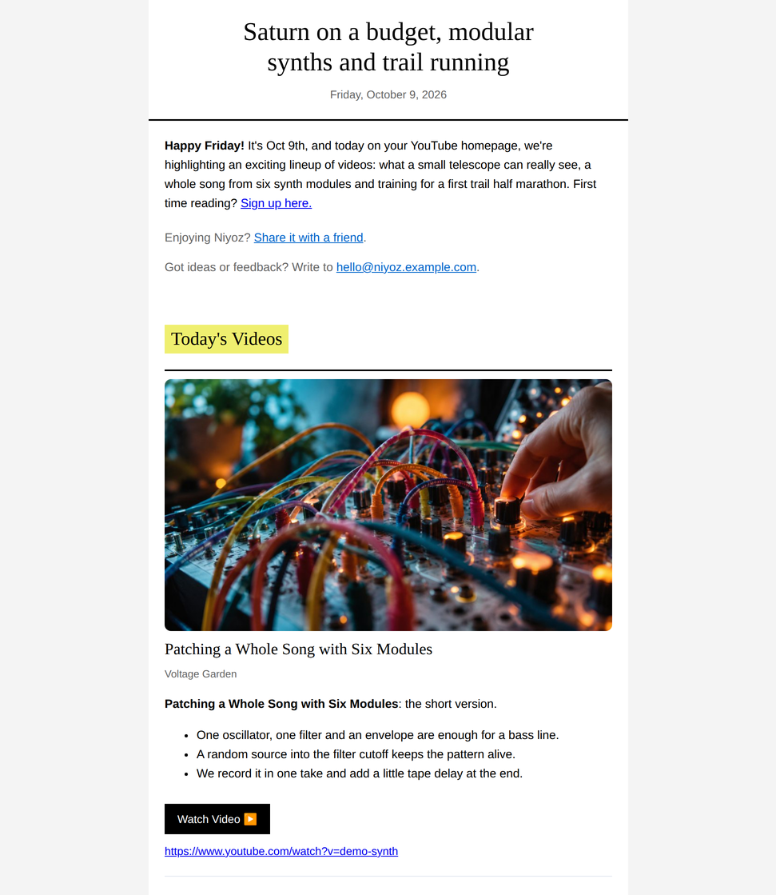
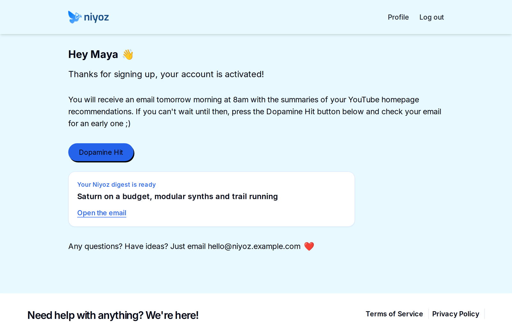
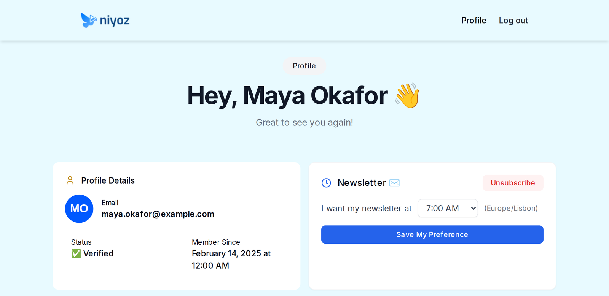
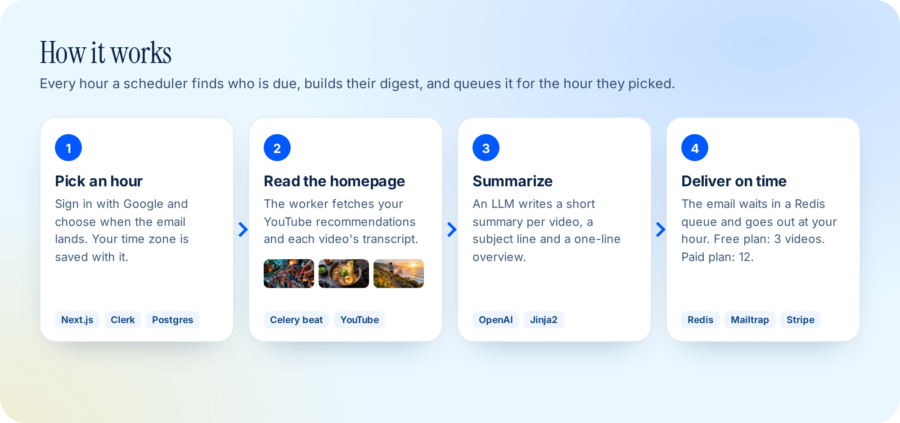

A digest worth opening
Every email starts with a subject line and a one-line overview written for that day. Each video gets its thumbnail, channel, a short summary and three bullet points, so you can tell in seconds whether it is worth watching.
Niyoz summarises the videos YouTube recommends to you and emails you one tidy digest at the hour you pick.
Today: modular synths, a $300 telescope and trail running.

Press Dopamine Hit on the dashboard and Niyoz builds today's digest right away. This is the real app running on a laptop in demo mode.

Every email starts with a subject line and a one-line overview written for that day. Each video gets its thumbnail, channel, a short summary and three bullet points, so you can tell in seconds whether it is worth watching.

After sign-up the dashboard says when your first email lands. The Dopamine Hit button builds one now and links straight to it.

Sign in with Google, pick the hour and Niyoz saves your time zone with it. Free users get 3 videos a day; the paid plan gets 12.

Every hour a scheduler finds who is due, reads their homepage, writes the summaries and queues the email for the hour they picked.

Demo mode swaps YouTube for eight made-up videos from made-up channels, so you can run the whole flow with no accounts. These thumbnails are AI-generated scenes.


Python 3.12 with Poetry, Node.js 20 and Docker for Redis. No Google, OpenAI, Stripe or database account needed in demo mode.
# Redis docker run -d --name niyoz-redis -p 6379:6379 redis:alpine # Backend on :8000 cd core && poetry install YOUTUBE_DEMO_MODE=true REDIS_URL=redis://127.0.0.1:6379/0 API_KEY=dev \ DEMO_THUMB_BASE_URL=http://127.0.0.1:8000/demo/thumbs \ poetry run uvicorn main:app --port 8000 # Web app on :3000 cd web && npm install NEXT_PUBLIC_DEMO_MODE=true NIYOZ_DEV_API_URL=http://127.0.0.1:8000 \ NIYOZ_DEV_API_KEY=dev npm run dev
Then open 127.0.0.1:3000/dashboard and press Dopamine Hit. Full setup is in the README.